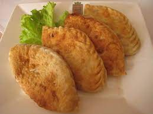

Khuushuur Recipe.

Mongolian fried meat pies recipe by Enki Batsaikhan
Ingredients:
- Flour
- Salt
- Ground Beef/Lamb
- Onions
- Garlic
- Water
- Oil
Steps:
- Make the dough using 3 cups of flour mixed with water, then let it rest.
- Chop the onions and garlic.
- Mix ground beef with chopped onion, garlic, and add a bit of water.
- Add salt, pepper, and other spices.
- Knead the dough and cut into 3 pieces.
- Roll the pieces into long cylinders.
- Cut the cylinders into 2 finger length pieces.
- Roll the units into round flat doughs.
- Put meat mixture in the middle of flattened doughs.
- Pinch the dumpling closed into flat meat pies.
- Until you run out of meat or dough.
- Prepare pan with oil and heat it up.
- Fry the meat pies in the oil until golden brown.
- Continue until all the khuushuur are cooked.
- Enjoy.